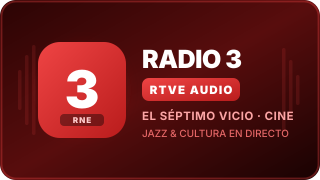

La Esencia del Cine y el Jazz en Tiempo Real
Sintoniza las mejores bandas sonoras, composiciones cinematográficas y los gigantes del jazz clásico y contemporáneo. Con emisión directa garantizada de Radio Klara (Valencia), Radio 3 (RNE) y Radio 5 (RNE).
⚡ Protocolo Adaptativo HLS + Icecast Direct
🛡️ Cero Restricciones CORS
📱 Progressive Web App (PWA) Lista

SONANDO AHORA
Radio 3 (RNE)
Cargando sintonía...
🎼
Compositor:
Compositor en emisión
🎬
Banda Sonora / Álbum:
Banda Sonora Original
🎙️ Locución RNE
🕒 00:00 - 00:00
Cultura y Música
🌐 Web Oficial / EPG
Descripción del programa en antena.
🎙️
Identificador Acústico (Tipo AHA Music & Shazam)
Pulsa para escuchar la música que suena por tus altavoces o auriculares y detectar título, compositor y carátula.
🎧 Escuchando audio...
🔍
Buscador Manual e Identificador de Canciones:
Encuentra al instante carátula HD, compositor y tema oficial
Compositores rápidos: